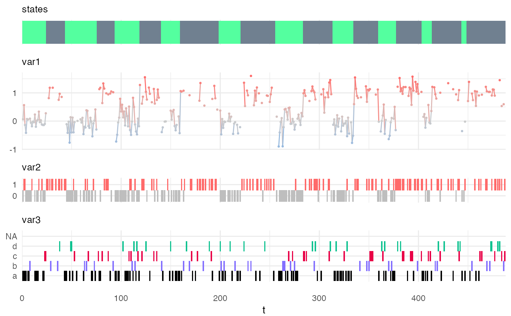

specify_hsmm.RdThis function returns an object of class hsmm from the parameters passed as arguments.
specify_hsmm( J, state_names = NULL, state_colors = NULL, init = NULL, transition = NULL, sojourn = NULL, marg_em_probs = NULL, censoring_probs = NULL, verbose = FALSE )
| J | an integer. The number of hidden states. |
|---|---|
| state_names | (optional) a vector of characters. Names associated to each state.
Must be of length |
| state_colors | (optional) a vector of color-specifying characters. Colors associated to each state.
Must be of length |
| init | (optional) a vector of |
| transition | (optional) a |
| sojourn | (optional) a list. The sojourn distributions.
The sojourn distributions can be specified with the same distribution family for all states or each state can be specified independently.
In the first case (same distribution family for all states),
the list must have at least two elements:
a |
| marg_em_probs | (optional) a list. The marginal emission distributions.
The list has one element per variable.
The name of that element must be the name of the variable.
Variable names cannot contain the character '_'.
Each element of the list is itself a list of at least two elements.
The first one, named |
| censoring_probs | (optional) the probabilities of observations being censored in each state. Can be specified as a vector of length J of values between 0 (never censored) and 1 (always censored) or a a single value in [0,1] if the censoring probability is assumed to be identical in each state. If unspecified, the observations are assumed to never be censored (value 0) overall (individual variables may still be censored via their individual 'missing_prob'.) |
| verbose | a logical (default = |
An object of class hsmm which can be used to simulate time series with the simulate_hsmm() function or to decode time-series with the predict_hsmm_states() function. The returned hsmm object (model) can also be fit to specific sequences with the fit_hsmm() function.
simulate_hsmm() to simulate a sequence of hidden states and observations following the model specifications, predict_states_hsmm() to predict the sequence of hidden states from observation time-series and fit_hsmm() to fit a model to sequences of observations.
my_model = specify_hsmm( J = 2, init = c(1,0), transition = matrix(c(0,1,1,0),2,2), sojourn = list(type = "gamma", shape = c(2,10), scale = c(10,3)), marg_em_probs = list( var1 = list( type = "norm", params = list( mean = c(0,1), sd = c(0.3,0.2) ) ), var2 = list( type = "binom", params = list( size = rep(1,2), prob = c(0.2,0.8) ) ), var3 = list( type = "non-par", params = list( values = c("a","b","c","d"), probs = matrix(c(0.7,0.1,0.1,0.1, 1/4,1/4,1/4,1/4), 4,2) ), viz_options = list(colors = c("black","slateblue1","#E90046","#0EC290")) ) ), censoring_probs = list(p = c(0.1,0.2), q = matrix(c(0.1,0.2,0.3,0.4,0.5,0.6), nrow = 3, ncol = 2)), state_names = c("A","B"), state_colors = c("seagreen1","slategray") ) class(my_model)#> [1] "hsmm"Xsim = simulate_hsmm(model = my_model, n_state_transitions = 20) plot_hsmm_seq(model = my_model, X = Xsim)